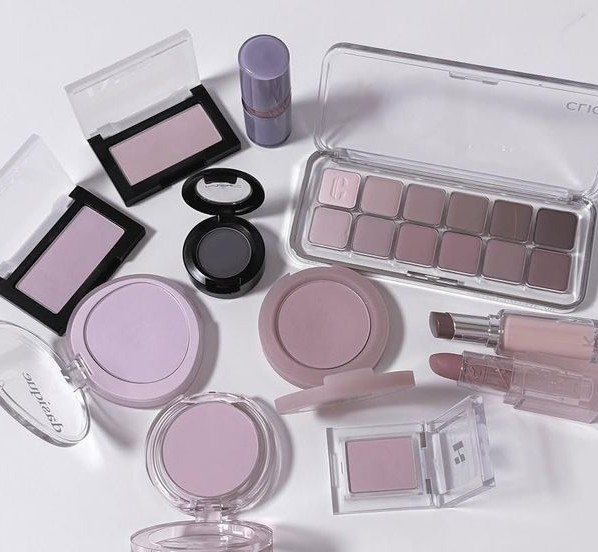
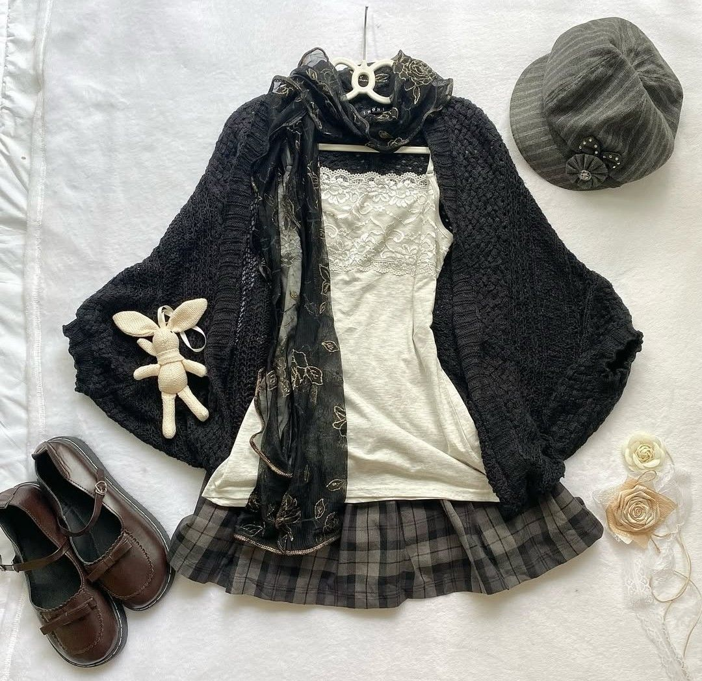
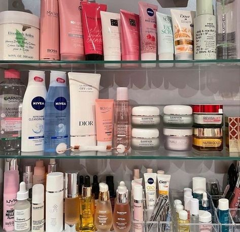

Nesta área você encontra tudo que eu uso durante as minhas manhãs ao me arrumar para sair de casa!
Aqui estão alguns dos itens que fazem parte do meu guarda-roupa. Passe o mouse por cima de cada foto para descobrir um pouco mais sobre o objeto desejado.

Desde a adolescência gosto muito de maquiagem, sendo assim costumo tentar me maquiar todas as manhãs. Gosto muito de blush rosa e sombras brilhosas.

No quesito roupas gosto muito de saias e vestidos com babados. Geralmente uso tons de preto, branco, cinza e prata, mas de vez em quando coloco um toque de cor.

Tenho alguns cosméticos nas prateleiras do meu armário, como cremes para o corpo e rosto, perfumes, óleos de cabelo, entre outros produtos.